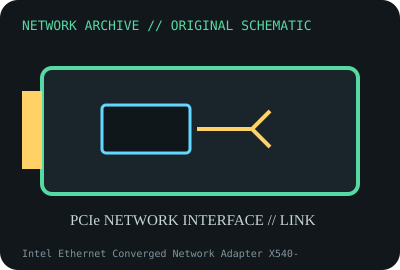

[ MODEL-SPECIFIC NETWORK HARDWARE ]
Intel Ethernet Converged Network Adapter X540-T2
Dual-port PCIe 10GBASE-T copper adapter. Confirm exact product label and revision before applying specifications.

IDENTIFICATION: Confirm manufacturer PID, hardware revision, device ID or module suffix. Nominal standards/link rates are not measurements of payload performance.
Exact specifications and compatibility
| Dedicated subcategory | Ethernet adapters |
|---|---|
| Exact product/model | Intel Ethernet Converged Network Adapter X540-T2 |
| Bus, ports and physical interface | PCIe 2.1 x8; two RJ-45 ports. |
| PHY, radio or protocol | Intel X540-AT2 controller; dual 10GBASE-T with backward link speeds supported by peer and driver. |
| Nominal rate (not measured) | 2 x 10Gb/s nominal links; 20Gb/s aggregate line rate, not a measured flow. |
| Measured throughput | No measured benchmark is claimed for a physical specimen. A valid result must record host/peer, link partner, media/cable, driver/firmware, traffic pattern, test tool and duration. |
| Drivers, OS and firmware | Intel ixgbe on supported Linux; Intel Windows Server packages and NVM releases depend on OS and OEM. |
| Compatibility | PCIe x8 electrical connection and 10GBASE-T switches; use Cat 6A for 100m 10GbE runs; Cat 6 reach depends on installation. |
| Variant warning | X540-T2 is dual copper, unlike X520 SFP+ adapters, onboard X540-AT2 implementations, and single-port X540-T1. Verify P/N, NVM and bracket. |
Model and revision notes
X540-T2 is dual copper, unlike X520 SFP+ adapters, onboard X540-AT2 implementations, and single-port X540-T1. Verify P/N, NVM and bracket.
Intel ixgbe on supported Linux; Intel Windows Server packages and NVM releases depend on OS and OEM.
PCIe x8 electrical connection and 10GBASE-T switches; use Cat 6A for 100m 10GbE runs; Cat 6 reach depends on installation.
Archival, ESD and preservation notes
Log assembly/PBA, NVM, MACs, driver and airflow. Handle unpowered by edges and store in ESD shielding; preserve heatsink clearance.
Document source URL, access date, document revision and specimen label/condition. Preserve without credentials or private configuration.
Primary manufacturer and standards sources
- Intel Ethernet Controller X540-AT2 specificationsPrimary manufacturer or standards documentation; verify exact SKU and host revision.
- Intel Ethernet support and driver centerPrimary manufacturer or standards documentation; verify exact SKU and host revision.
- IEEE 802.3 Ethernet standardsPrimary manufacturer or standards documentation; verify exact SKU and host revision.
Manufacturer statements cover the named part or its documented product family; the exact labeled revision and vendor compatibility list take precedence.